The brief: design an interface for a food-recipe mobile app and propose a USP or feature that makes it stand out from the competition and drives engagement, for an audience of men and women aged 20–35.
Most recipe apps treat every user the same — an endless, un-personalized feed of dishes. I designed Foody around the opposite idea: a recipe platform that gets to know your taste, your time, your cooking level and your rhythms fast, and a community layer (Foody = Food + Buddy) that turns beginners into contributors instead of passive scrollers.
Solo, end-to-end: discovery, wireframes, hi-fi UI and prototype in 3 days.
3
Research methods used Survey · Benchmark · User test
Onboarding, filters, home, search, recipe detail and profile — designed and prototyped solo.
4-step
Onboarding
3 levels
Beginner→Master Chef
#FAA41A
Brand orange
Design Process & Research
How I worked through 3 days.
I followed my usual 7-step process, compressed to fit the sprint: Problem → defining scope (a recipe app, interaction with filters & recipes at the core). Research → competitive benchmark, a quick user persona and success metrics. Design exploration → wireframes to validate logic before pixels. Design creation → high-fidelity UI, ready to test. Then preparation, support and monitoring — the steps I'd carry into a real handoff.
UX artifacts used in this project
Opportunity map — onboarding, filters & sort, content and community, scored for impact
Hypotheses — 3 assumptions to validate before building
Journey map — WHERE / ACTION / GOAL across onboarding, home, filters & recipe
Low-fidelity wireframes — onboarding flow + filters, tested for hierarchy
Research methods — survey, user testing and metric/competitive analysis
Step 1
Problem
Recipe mobile app — interaction with filters and recipes at the core.
Step 2
Research
Metrics, competitive benchmark and a quick user persona.
Step 3
Design Exploration
Wireframes to validate logic and hierarchy before pixels.
Step 4
Design Creation
High-fidelity UI, built to be tested — wireframes into prototype.
Step 5
Project Preparation
Preparing the design for developers, documenting decisions made.
Step 6
Project Support
Working closely with developers during implementation.
Step 7
Project Monitoring
Monitoring post-launch to gain knowledge and improve.
Hypotheses I wanted to validate
Users see value in the content once they've been through onboarding and seen the value proposition.
An AI search assistant would make it easier to find the right recipe, if it genuinely saves effort.
Community matters for this category — and users can be nudged to participate, not just consume.
Research participants
Men and women, 20–35 years old
Based in LatAm and Europe
Mixed cooking confidence — from "rarely cooks" to "cooks daily"
Mixed device fluency, all comfortable with mobile apps
Research Artifact · Journey Map
Where the user is
Action → Goal
Mapping onboarding, home, filters and the recipe screen against action and goal made the priorities obvious: onboarding exists to know the user, home exists to let them browse, filters exist so they find, and the recipe screen exists so they can share the experience — not just read a list of steps.
UncertainConfident
01
Onboarding
Action
Complete 3 quick steps
Goal
Know the user, to offer a personalized homepage
02
Home
Action
Read, save & share recipes
Goal
Let the user browse and discover valuable content
03
Filters
Action
Discover recipes through filters — always >1 result
Goal
The user finds what they're looking for
04
Recipe
Action
View the recipe & vote
Goal
Share the experience
The USP · Foody Match
Recipes that adjust to who you are today.
Most recipe apps ask you to search. Foody Match is a lightweight personalization engine, built from three ingredients instead of a 20-question form:
1 · A 4-step onboarding, not an interrogation
Cooking confidence, time available and diet leaning captured through simple thumb sliders — done in under a minute, ending in 3 recipes picked just for you.
2 · Context-aware surfacing
Home reads the time of day — "Breakfast time!" at 9am — and re-sorts around it automatically, no filter tap required.
3 · Opt-in rhythm personalization
Users can optionally connect Apple Health or their zodiac sign so Foody can nudge more nourishing, energizing or lighter meals across the menstrual cycle — a signal most food apps ignore entirely.
4 · Cooking-level gamification
Beginner → Adventure → Master Chef. Reaching Master Chef unlocks recipe uploads — turning the most engaged users into the app's content engine, and feeding the freemium model (free tier + premium recipes/features).
Foody Match · same app, personalized home per user
Measuring success
What I'd track post-launch
North star
Onboarding completion rate
The 4-step flow only pays off if people finish it — this gates every other personalization signal.
Engagement
% sessions using AI search / filters
Validates whether the AI assistant actually reduces effort, per Hypothesis 2.
Engagement
Recipe saves per session
A proxy for relevance — are the surfaced recipes actually worth keeping?
Retention
D7 / D30 retention
Does context-aware surfacing bring people back at the right moments (mealtimes)?
Community
Recipes uploaded per Master Chef user
Tests whether gamified levels genuinely convert consumers into contributors.
Business
Free → Premium conversion
The freemium model's core health metric, tied to how much value onboarding + Match deliver upfront.
Prototyping · Wireframes
Low-fidelity validation
Logic before pixels
The onboarding had to earn its 4 steps.
Before any visual design, I wireframed the onboarding to pressure-test hierarchy: search demo → cooking-level selection → three quick sliders → a results screen with 3 recipes already picked. Every step had to justify its place, or it got cut.
Key wireframe decisions
Sliders over multi-choice forms — faster to answer, still expressive
Results shown immediately — proves the value proposition before asking for more
Filters should never block content — always return a result
Explore categories kept flat and scannable, not nested menus
Step 1 · Search demoSearch bar + two content cards
From a personalized home, the user can free-type into search (with live autocomplete across ingredients and recipes), or tap into structured filters — Explore category, cooking level, or time. Filters are additive chips, never a dead end: there's always a result waiting on the other side.
Ingredients, time to make, diners, sort (newest, trending, relevance, ingredient count)
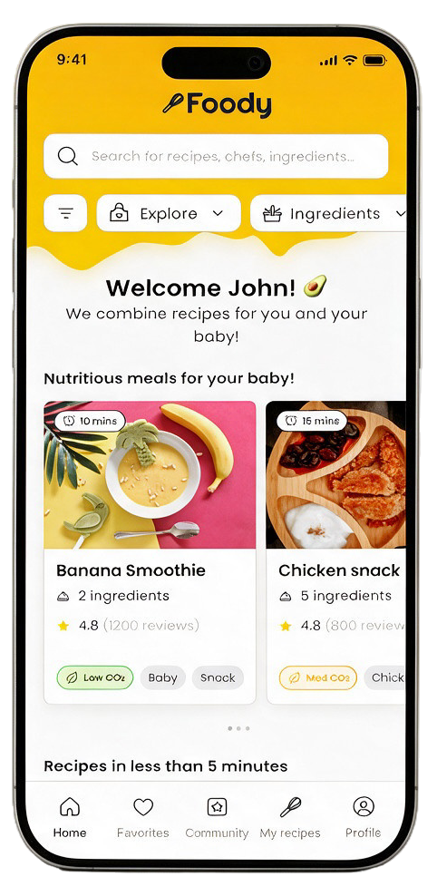
Personalized home
01
Welcome John!
Home opens already sorted by taste profile from onboarding.
Types
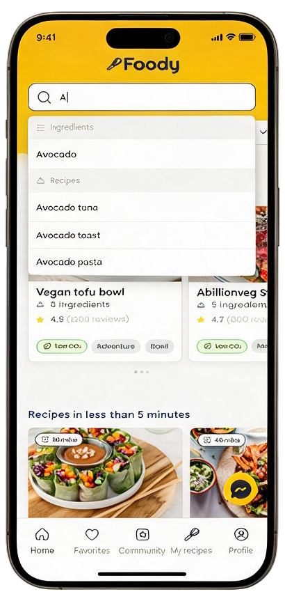
Searching "A"
02
Live autocomplete
Matches ingredients and recipe titles as you type.
Filters
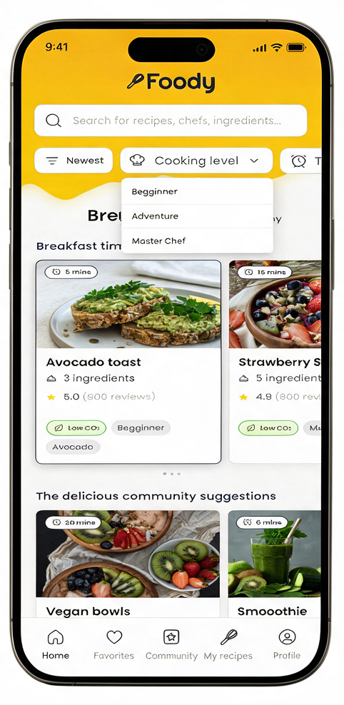
Cooking level
03
Beginner / Adventure / Master Chef
Filters tie directly to the onboarding-set skill level.
Supporting states
Filtered results & gamified unlock
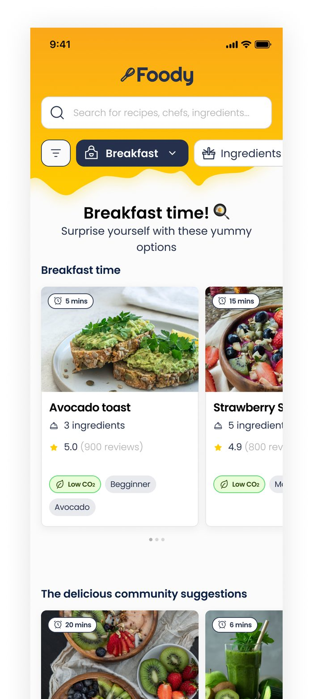
Breakfast time! · filter applied
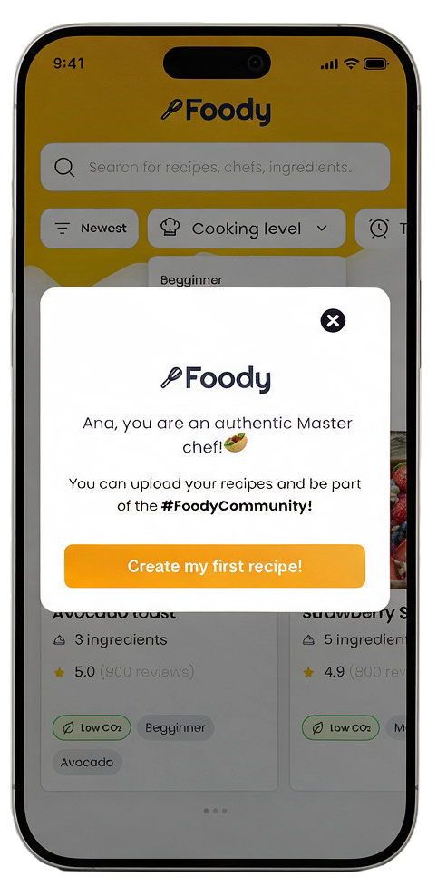
Master Chef unlocked — engagement moment
Visual Design · Flow 02
Recipe detail
The cooking process
From "I found it" to "I made it."
The recipe screen was designed as a full cooking companion, not just an ingredient list:
At-a-glance icon row — time, difficulty, allergens, diet tags — before you commit to reading
Numbered preparation steps paired with in-progress photos, so users can match what they see
A vote (👍/👎) moment right after the recipe — feeds the community and the recommendation engine
"Influencers that made this recipe" — the TikTok/creator tie-in from the concept, built into the detail screen itself
Share and favorite always one tap away, low CO₂ badge for sustainability-minded users
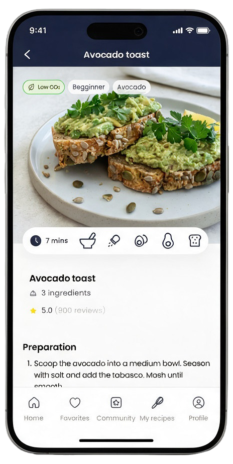
Avocado toast · 7 mins · 3 ingredients
UI Components · Mini Design System
Built once
Reused across every screen
Not screens — a small system.
Rather than designing each screen from scratch, I built Foody around a handful of reusable components — a recipe card, a few carousel shapes and a couple of editorial patterns — and let composition do the rest. Same pieces, different shelves.
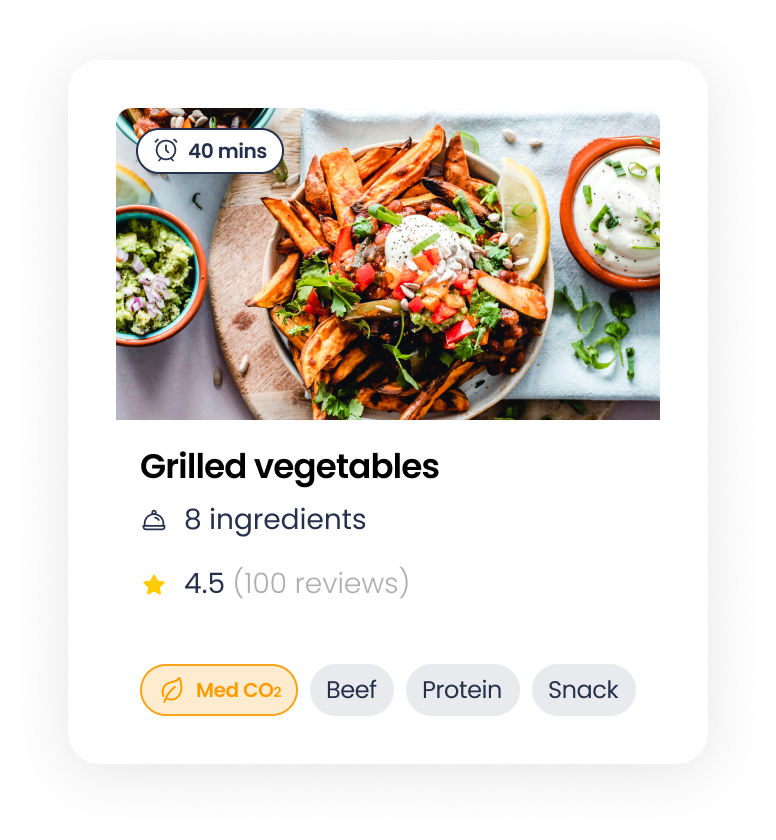
Core unit
Recipe card
Image, time badge, title, rating and tag chips — the single unit every list in the app is built from.
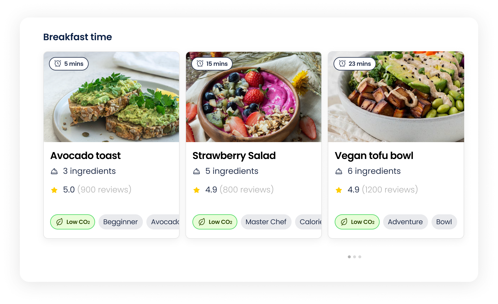
Shelf
Recipe carousel
The horizontal row behind "Breakfast time", "5-minute recipes" and every other home shelf.
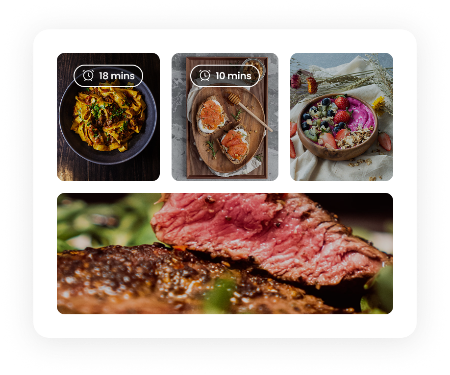
Gallery
Image grid
A 2+1 layout for step photos and gallery moments, reused in the recipe detail screen.
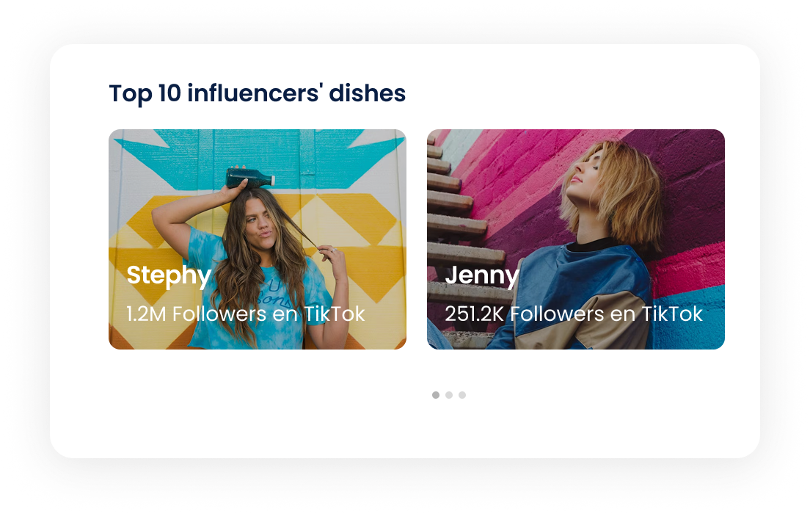
Social
Influencer carousel
The creator tie-in — swipeable cards linking a recipe to the TikTok chef who made it.
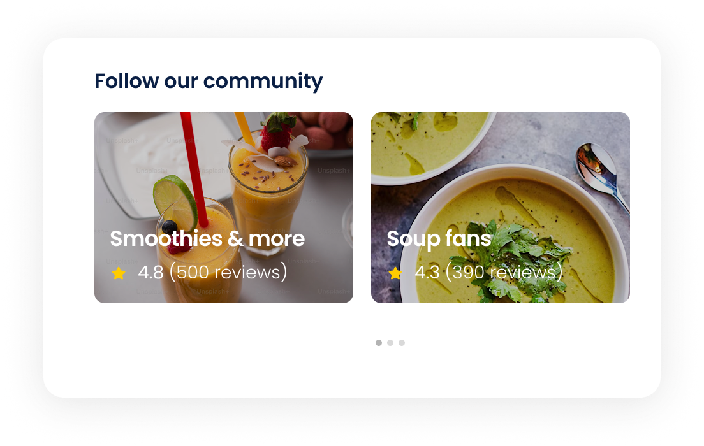
Social
Community row
An editorial pattern for "Follow our community" — collections that feel curated, not algorithmic.
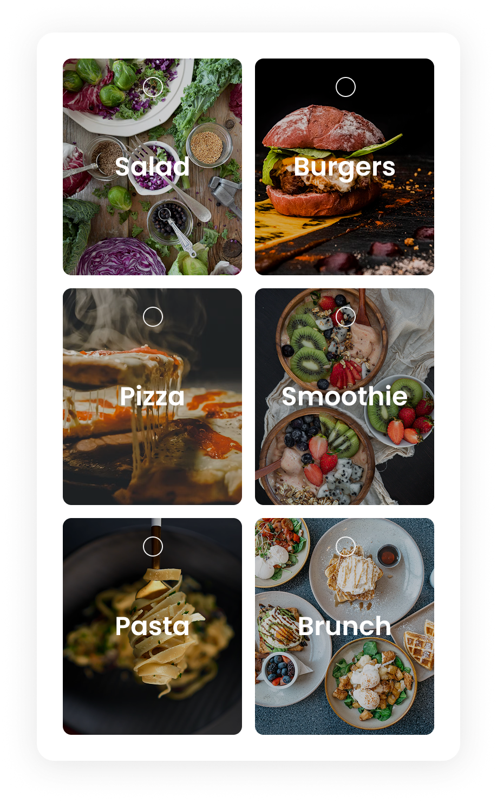
Navigation
Category grid
Born in onboarding as the taste picker, reused as the Explore filter — six categories, one tap.
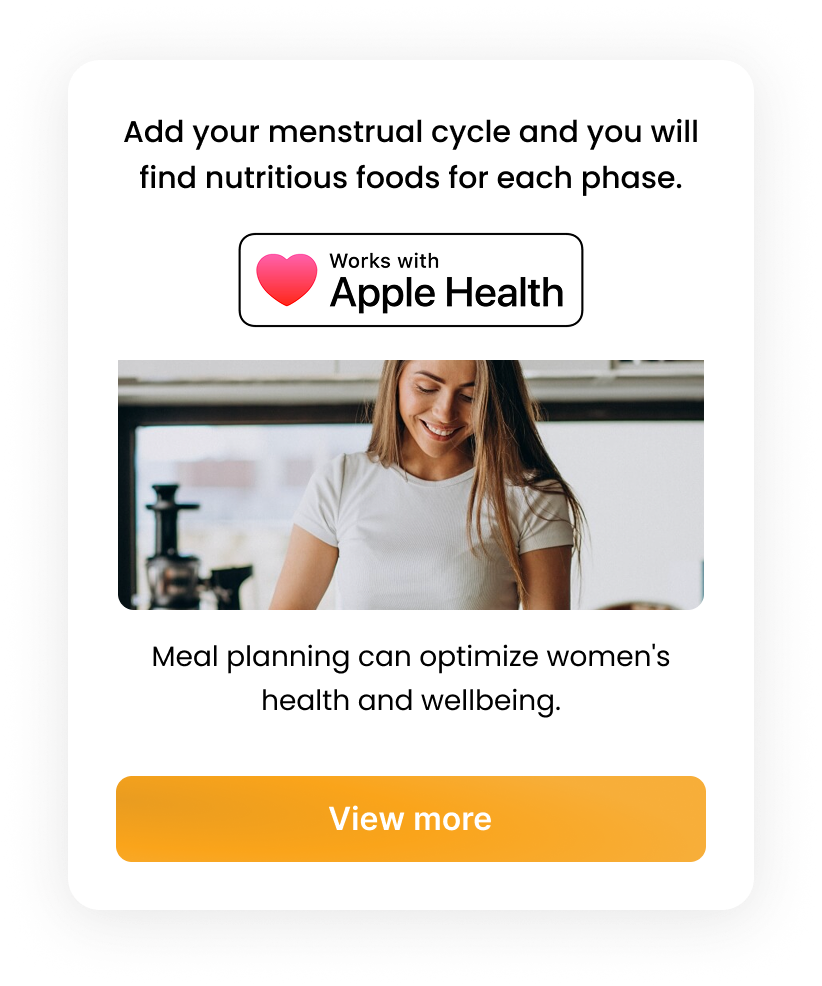
Personalization
Integration card
Where Apple Health — and, more playfully, zodiac sign — plugs into Foody Match, nudging more nourishing meals across the cycle.
Prototype · Recorrido Animado
Todo el recorrido, en movimiento.
Onboarding, home personalizado, filtros, ficha de receta y búsqueda — el flujo completo de Foody animado en loop, tal como se vive en la app.
Key Design Decisions
Decision 01
Sliders instead of forms
Onboarding trades a long questionnaire for 3 quick thumb-sliders — faster to complete, still rich enough to personalize.
Decision 02
Filters never dead-end
Every filter combination returns a result. The goal is discovery, never a blocked "no recipes found" state.
Decision 03
Time-of-day aware home
"Breakfast time!" — content re-sorts around the moment the user opens the app, no extra tap required.
Decision 04
Gamified cooking levels
Beginner → Adventure → Master Chef. Reaching the top tier unlocks recipe uploads, converting users into contributors.
Decision 05
AI-assisted search
A chat-style assistant embedded in search to answer "what can I make with X" — reducing the cost of an empty search bar.
The USP only works if the onboarding cost stays under a minute — any more friction and the value proposition never gets seen.
Learning 02
Community is a feature, not a footnote
Tying gamified cooking levels directly to the ability to upload recipes turns retention into a content engine, not just a badge.
Learning 03
A 3-day constraint sharpens scope
Wireframing first — before any visual polish — was what made it possible to cover onboarding, discovery and cooking in the time available.
The core principle
"The best recommendation is the one you didn't have to ask for."
Foody Match exists so the app does the first pass of thinking for the user — time of day, skill level, mood — and lets search and filters handle everything after that.